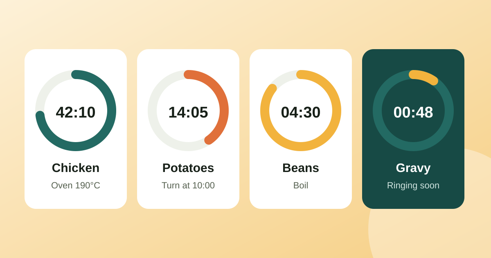

HIIT and Tabata timer: how to set the work and rest intervals
Tabata is 20 seconds on, 10 off, eight times: four minutes in all. Other HIIT formats use longer work blocks and equal or longer rest.
Read article
To time a whole dinner, work backwards from serving time and give every dish its own labelled timer. The single oven timer handles one dish, but a real meal has a roast, potatoes, a vegetable and a sauce, each with its own clock, and they all need to be ready together. Most overcooked sides come from one kitchen timer being reused or reset in the rush. Running multiple timers at once fixes that, and this guide shows how.
Decide when the food goes on the table, then subtract. Write the steps with their durations and count back:
| Step | Length | Start at (serving 19:00) |
|---|---|---|
| Roast chicken in oven | 75 min | 17:30 |
| Rest chicken, covered | 15 min | 18:45 |
| Roast potatoes | 45 min | 18:00 |
| Green beans, boil | 5 min | 18:50 |
| Gravy, simmer | 10 min | 18:45 |
The chicken has to come out at 18:45 so it can rest while the beans and gravy finish. The times are examples; use your own recipe and oven.
Two alarms in the same minute is fine; two tasks that both need both hands is not. When you build the schedule, leave a few minutes between steps that need attention, and keep the long passive steps (oven, resting) for the times you are busy elsewhere.
The same approach works anywhere several things run in parallel, and our timers and focus guides will cover more of it: a workout circuit with rest between sets, a laundry day with washer and dryer on different cycles, or study blocks with short breaks between. One task, one labelled timer, and a plan counted back from the deadline.
MultiTimer is a multiple timer app that runs as many countdowns, stopwatches and Pomodoro timers as you need at once, grouped into cards such as Kitchen, Workout or Study. Alarms are scheduled as exact alarms so they still ring when the phone is asleep, and a live notification shows what is still running. Save a dinner as a preset and the next roast is one tap.
Decide when the food goes on the table, then subtract each step's length to find its start time. Give every dish its own labelled timer, and include resting time as a step.
One reused kitchen timer is the main cause of overcooked sides. Labelled timers such as "Chicken out" or "Beans" tell you what to do the moment one rings.
Not being able to hear the alarm, snoozing the wrong timer, forgetting to time resting meat, and trusting time over temperature. A timer says when to check; a thermometer says when it is done.
Tabata is 20 seconds on, 10 off, eight times: four minutes in all. Other HIIT formats use longer work blocks and equal or longer rest.
Read articleTwenty-five minutes on, five off, a longer break every fourth round. The classic Pomodoro setup works for many people, and it is easy to tune when it does not.
Read articleA 7.4 kW home charger draws 32 A for hours. For a short run clipped to a wall that means 4 mm² copper; in an insulated wall or over 30 m it means 10 mm² or more.
Read articlePublished: . More in Timers & focus or all articles.